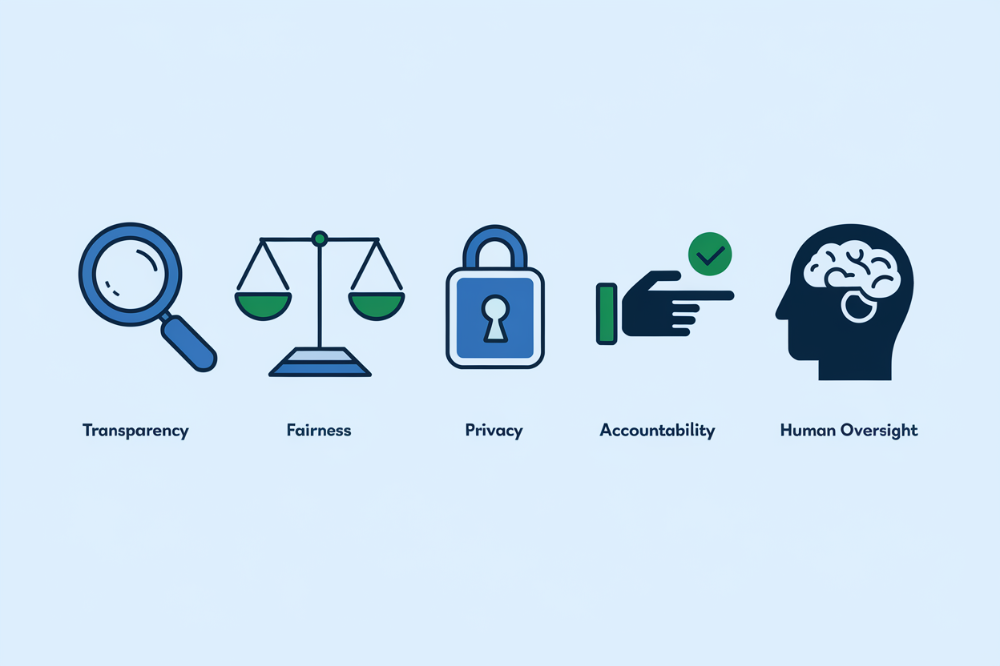
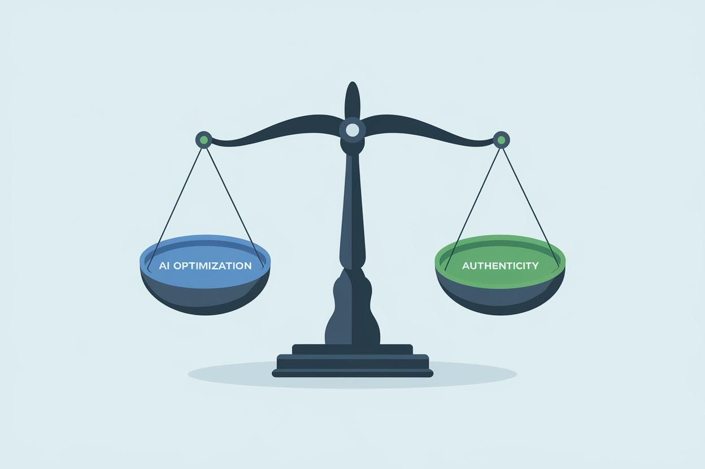
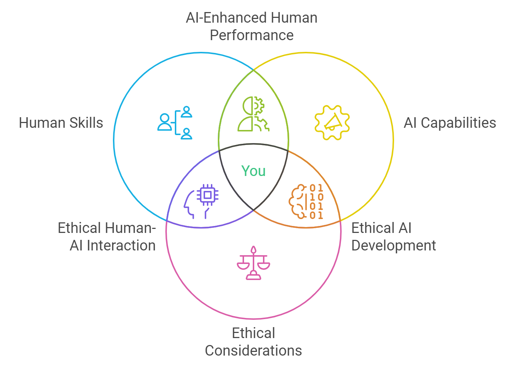
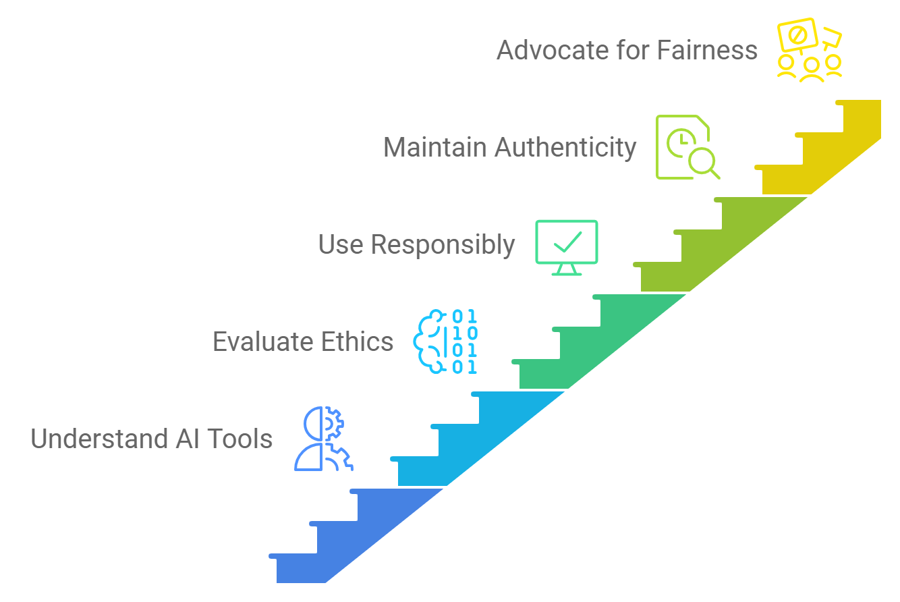

Chapter 6: Ethical Considerations in AI-Powered Job Applications
Thanks for joining us! In the previous episode, we mastered the art of creating a cohesive application package. Now, we don our ethics capes and enter the moral maze of AI-powered job applications. Next stop: ethical excellence.
6.1 Introduction: The Ethical Landscape of AI in Hiring
As STEM professionals at the forefront of technological advancement, we have a unique responsibility to approach AI-powered job applications with a strong ethical framework.
The Dual Role of STEM Professionals
As both users and potential developers of AI systems, STEM professionals face a dual responsibility:
- To use AI tools ethically in our own job searches (like using the Force for good)
- To contribute to the development of fair and unbiased AI systems in our professional capacities (nobody wants Skynet running HR)
This dual role requires us to be particularly mindful of the ethical implications of AI in hiring processes, like being both Luke Skywalker and Yoda at the same time.
Key Ethical Principles in AI-Powered Hiring
- Transparency (No smoke and mirrors here)
- Fairness and Non-discrimination (AI shouldn't play favorites)
- Privacy and Data Protection (Keep your digital wallet under lock and key)
- Accountability (The robot didn't do it – you did)
- Human Oversight (Keep the 'human' in Human Resources)
Throughout this chapter, we'll explore how these principles apply to your AI-powered job search and career development.

6.2 Transparency in AI-Assisted Applications
Transparency is crucial in maintaining trust between applicants, employers, and AI systems. As a STEM professional, you should strive for openness about your use of AI tools in the application process.
Disclosing AI Use in Application Materials
Be open about using AI tools to enhance your application. This doesn't mean you need to provide a detailed list of every tool used, but a general acknowledgment can be appropriate, like admitting you used spell-check, but for the 21st century.
Example disclosure: "This resume was optimized using AI tools to ensure clarity and relevance, while all content remains my own original work. No AIs were harmed in the making of this application."
Understanding the AI Tools You Use
To maintain transparency, it's important to have a clear understanding of the AI tools you're using:
- Research the algorithms and data sources behind the tools (Run background checks on your digital assistants)
- Understand potential biases or limitations in the AI systems (Every superhero has a weakness, especially AI)
- Be prepared to explain how these tools assisted your application process (Tell the story of how you and AI saved the day)
Advocating for Transparency from Employers
As a STEM professional, you're in a position to advocate for transparency in AI-powered hiring processes:
- Ask about the use of AI in the hiring process during interviews (Like asking about the company's future financial security, but for robots)
- Request information on how your data will be used and stored (It's helpful to know beforehand if your resume will appear on a billboard in Times Square)
- Encourage employers to be open about their AI-powered hiring practices (Sunlight is the best disinfectant, even for algorithms)
6.3 Ensuring Authenticity While Leveraging AI

One of the key ethical challenges in using AI for job applications is maintaining authenticity. Your application should reflect your true skills, experiences, and personality, not an AI-generated ideal candidate. After all, you're applying for the job, not your digital doppelganger.
Maintaining Your Voice and Experience
- Use AI suggestions as a guide, not a replacement for your own writing (It's a co-pilot, not an autopilot)
- Ensure all experiences and skills listed are genuinely yours (This goes without saying)
- Preserve your unique voice and perspective in your application materials (There's only one you, and that's your greatest superpower)
Avoiding Over-Optimization
While AI tools can help you optimize your application, it's crucial to avoid crossing ethical lines:
- Resist the temptation to include keywords or skills that don't accurately reflect your abilities (Don't claim to be fluent in Klingon unless you really are)
- Focus on presenting your true strengths rather than gaming the system (You're a STEM professional, not a Vegas card counter)
- Remember that your integrity is more valuable than any short-term gain from misrepresentation (Honesty is the best policy, even when dealing with ones and zeros)
Ethical Use of AI-Generated Content
When using AI writing assistants or content generators:
- Use AI to enhance, not create, your content (It's seasoning, not the main course)
- Always review and modify AI-generated text to ensure accuracy and personal relevance (Don't let AI tell your life story better than you can)
- Be prepared to discuss and elaborate on any point in your application during interviews (If you can't explain it, you probably shouldn't include it)
Ethics Tip: Think of AI as a writing coach, not your ghostwriter. Use it to polish your ideas, not to invent them.
6.4 Addressing Bias in AI-Powered Job Applications
AI systems can perpetuate or even amplify existing biases. As STEM professionals, we have a responsibility to recognize and mitigate these biases.
Types of AI Bias in Hiring
- Historical Bias: AI trained on past hiring data may perpetuate historical discrimination (Sometimes, the past should stay in the past)
- Representation Bias: Underrepresentation in training data can lead to biased outcomes (You'd never training for a marathon by only running downhill)
- Measurement Bias: Flaws in data collection can result in skewed AI decision-making (Garbage in is still garbage out, no matter how fancy the algorithm)
Strategies for Mitigating Bias
- Use multiple AI tools to cross-reference suggestions and identify potential biases (Like getting a second opinion, but from robots)
- Critically evaluate AI recommendations, especially if you belong to an underrepresented group in STEM (Be your own diversity and inclusion officer)
- Supplement AI tools with human review, particularly from diverse perspectives (Humans and AI, working together to save the world)
- Be aware of potential biases in the language and framing of your application materials (Words matter, especially when algorithms are reading them)
Case Study: Gender Bias in STEM Hiring
Research has shown that AI systems can inadvertently favor male candidates in STEM fields due to historical gender imbalances in these areas. Sometimes the AI is stuck in a 1950s sitcom, but without the laugh track. To counteract this:
- Use gender-neutral language in your applications (He/She/They all code equally well)
- Highlight achievements and skills objectively, focusing on impact rather than stereotypically gendered traits (Because algorithms shouldn't assume who wears the pants in the lab)
- If you're from an underrepresented group, consider how to authentically represent your unique perspective and experiences (Your diversity is your strength, not a bug in the system)
6.5 Privacy and Data Protection in AI-Powered Job Searches
Protecting your personal data is crucial when using AI tools in your job search. Be mindful of the information you're sharing and how it might be used. Your data is kin to your secret identity – you wouldn't want just anyone knowing you're Black Widow?
Understanding Data Usage in AI Tools
- Read privacy policies of AI tools carefully (Or at least pass the text to a GPT to catch any red flags)
- Be aware of what data is collected, how it's used, and how long it's retained (Your data has a longer lifespan than, sadly, some marriages)
- Understand the implications of connecting AI tools to your social media or professional networking accounts (Do you really want to explain what exactly happened in that video from 2012?)
Strategies for Protecting Your Data
- Use anonymized versions of your resume when using AI analysis tools (Keep your secret identity safe)
- Regularly delete your data from AI platforms after use, if the option is available (Digital spring cleaning is "in")
- Be cautious about granting permissions to AI tools, especially regarding your contacts or social media data (Just because it asks nicely doesn't mean you must share)
GDPR and AI in Hiring: What STEM Professionals Should Know
The General Data Protection Regulation (GDPR) in the European Union has implications for AI in hiring:
- You have the right to know how your data is being used in hiring decisions (No more black box algorithms)
- You can request access to personal data held by companies (A backstage pass to see your digital self)
- You have the right to object to solely automated decision-making processes (Because sometimes, you need to tell the robots "Thanks, but no thanks")
Even if you're not in the EU, understanding these principles can help you advocate for your data rights in the hiring process.
Ethics Tip: Treat your personal data like you would treat your lucky interview underwear – with care, respect, and a healthy dose of caution about who gets to see them.
6.6 The Ethics of Competitive Analysis in Job Applications
AI tools can provide insights into how your application compares to others. Using this information ethically is crucial.
Ethical Use of Competitor Insights
- Use insights to understand general trends in successful applications (It's market research, not corporate espionage)
- Focus on improving your own qualifications and presentation (Be the best version of yourself, not a clone of someone else)
- Avoid directly copying unique phrases or project descriptions from other candidates (Plagiarism is for boomers)
Balancing Competitiveness and Integrity
- Use competitive insights as motivation for self-improvement and skill development (Let it inspire you, not define you)
- Focus on highlighting your genuine strengths rather than trying to match every aspect of top candidates (You're a unique snowflake, remember?)
- Remember that your unique experiences and perspective are valuable – don't lose sight of this in an attempt to conform to an AI-generated ideal (There's only one you)
6.7 AI and the Future of Work: Ethical Implications for STEM Professionals
As AI becomes more prevalent in hiring and workforce management, STEM professionals must consider broader ethical implications. Be the change you want to see in the world.
The Impact of AI on Job Displacement
- Be aware of how AI might automate certain aspects of STEM roles (The robots are coming for your jobs...?)
- Focus on developing skills that complement AI rather than compete with it (If you can't beat 'em, join 'em... or at least befriend 'em)
- Consider the ethical implications of developing AI systems that may displace workers (With great code comes great responsibility)
Ethical Considerations in Developing AI for Hiring
As potential developers of AI systems, STEM professionals should consider:
- The responsibility to create fair and unbiased hiring algorithms (Be the Ghostbuster of biased code)
- The importance of diverse development teams to mitigate bias (A team of clones is only cool in Star Wars)
- The need for ongoing monitoring and adjustment of AI systems to ensure fairness (It's not 'set it and forget it' – it's 'set it and obsessively check it')

Preparing for an AI-Augmented Workforce
- Consider the ethical implications of human-AI collaboration in your field (Your own buddy cop movie)
- Advocate for the responsible integration of AI in your workplace (Be the voice of reason in the robot revolution)
- Stay informed about the latest developments in AI ethics and regulation (Because knowing is half the battle; the other half is ethical implementation)
6.8 Developing an Ethical Framework for Your AI-Powered Job Search
Creating a personal ethical framework can guide your use of AI in job applications and beyond.
Key Questions to Consider:
- Does this AI tool align with my values? (If the AI were a person, would you invite it to your birthday party?)
- Am I comfortable with how my data is being used? (Is it being protected like your Netflix viewing history?)
- Does my use of AI maintain the integrity of my application? (Are you still you, or have you become AI-you?)
- Am I prepared to discuss my use of AI tools if asked in an interview? (Can you explain it without quoting from a movie?)
- How might my use of AI impact other candidates or the hiring process as a whole? (Are you tilting the playing field, or leveling it?)
Creating Your Ethical AI Use Statement
Develop a personal statement outlining your approach to using AI in job applications. For example:
"I commit to using AI tools responsibly in my job search, ensuring all information in my application is accurate and authentic. I will leverage technology to present my qualifications effectively while respecting the privacy and fairness of the hiring process. I am prepared to be transparent about my use of AI tools and to discuss any aspect of my application in detail. In short, I promise to be more 'Iron Man' than 'Ultron' in my use of AI."

6.9 Advocating for Ethical AI Use in Your Future Workplace
As STEM professionals, you have the potential to influence AI use in your future roles. Channel your inner Captain Planet, but for ethical AI.
Strategies for Promoting Ethical AI Use:
- Stay informed about AI ethics in your field (Be the Hermione Granger of AI ethics)
- Participate in or initiate discussions about ethical AI use in hiring and beyond (Be the spark that ignites the ethical fire)
- Advocate for diverse teams in AI development to mitigate bias (Avengers, assemble)
- Support transparency in AI use within your organization (Illuminate those algorithms)
- Encourage the development of ethical guidelines for AI use in your workplace (Be the Dumbledore to your company's AI Hogwarts)
Chapter Summary
Congratulations, ethical AI warriors! You've navigated the moral maze of AI-powered job applications. Let's recap:
- Understand the ethical landscape of AI in hiring (It's a jungle out there, but now you have a map)
- Maintain transparency and authenticity in AI-assisted applications (Be a glass house, but with strategic/mid-century modern privacy decor)
- Recognize and mitigate bias in AI-powered job searches (Be the superhero that bias deserves ,and the one it needs right now)
- Protect your privacy when using AI tools (Your data is your kryptonite – guard it well)
- Use competitive insights ethically (It's not about winning at all costs, it's about winning the right way)
- Consider the broader implications of AI in the workforce (Think big picture, like a chess grandmaster)
- Develop a personal ethical framework for AI use in job applications (Your very own AI constitution)
- Prepare to advocate for ethical AI use in your future workplace (Be the change you want to see in the AI world)
Practical Exercise: Become the Ethical AI Jedi You Were Meant to Be
Time to put your newfound ethical wisdom to the test! Complete these tasks to transform from an AI padawan to a full-fledged Ethical AI Jedi:
- Review an AI tool you've used in your job search. Write a brief analysis (Yelp review) of its ethical implications, considering transparency, bias, and data privacy.
- Draft your personal ethical AI use statement for job applications.
- Identify three ways you could advocate for ethical AI use in a potential future workplace.
Looking Ahead
As we move forward, remember that ethical considerations in AI are not just about compliance or avoiding pitfalls. They're about shaping a future where technology enhances human potential fairly and responsibly.
In the next chapter, we'll explore strategies for future-proofing your STEM career in the AI era, building on the ethical foundation we've established here.
Quiz: "Chapter 6 Ethical Considerations Knowledge Check"
-
What is a key reason for maintaining transparency about AI use in job applications?
-
How can STEM professionals help mitigate bias in AI-powered hiring tools?
-
What is an ethical way to use AI-generated content in your application?
-
When it comes to data privacy in AI-powered job searches, what is a recommended practice?
-
What is an ethical approach to using AI-powered competitive analysis in job applications?
Answers: 1-b, 2-c, 3-c, 4-b, 5-b